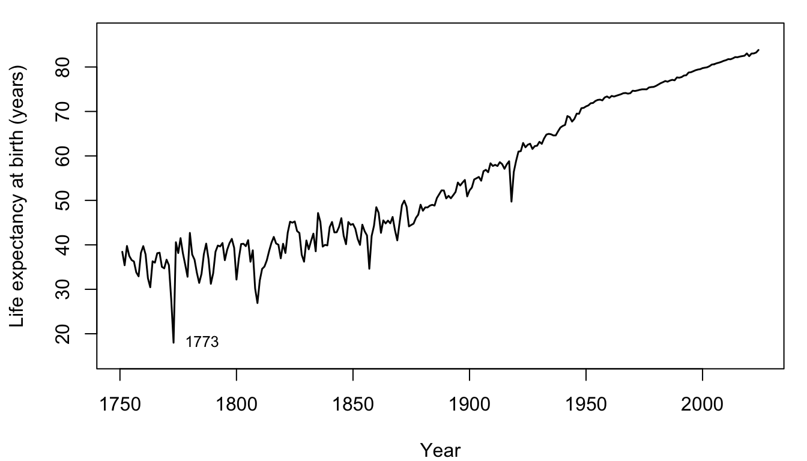
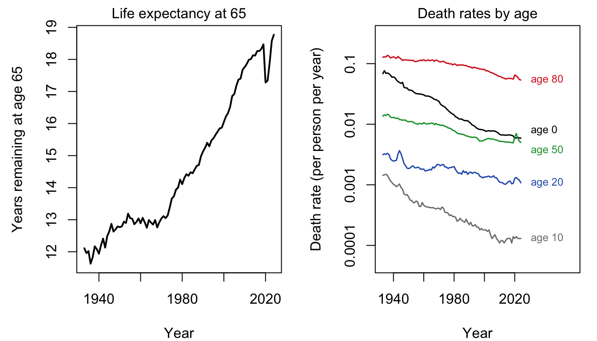
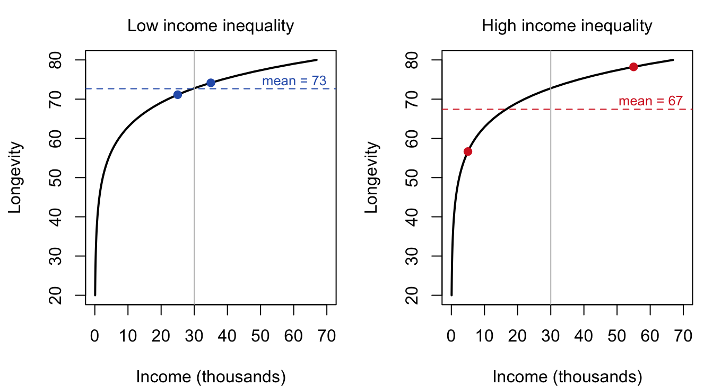
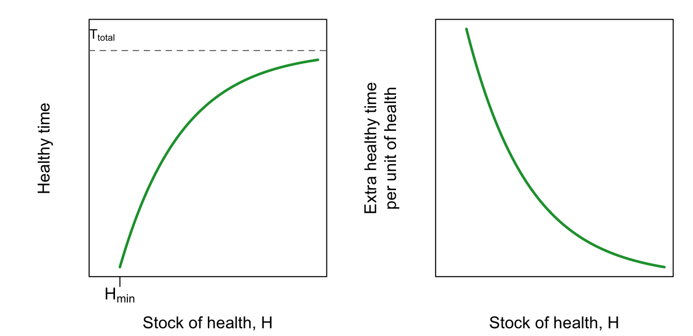
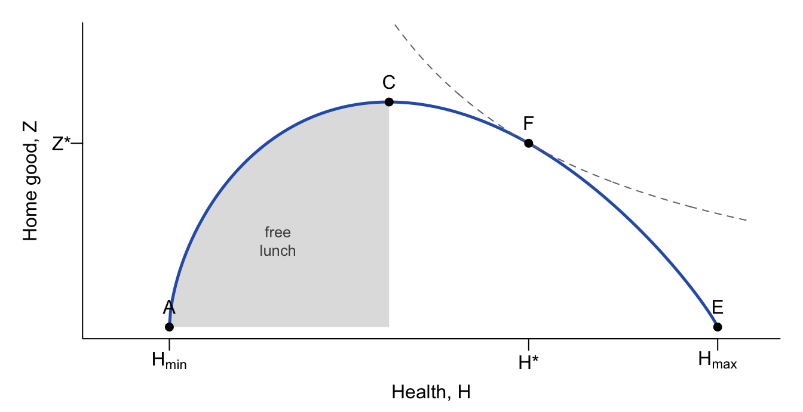
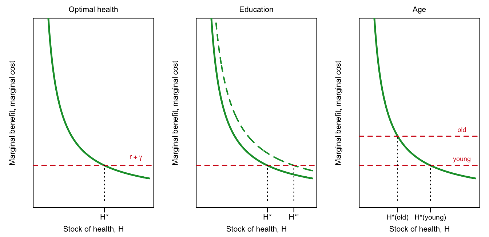

16Can Money Buy Longevity? Health, Mortality, and the Grossman Model
Draft: provenance notes (for review)
Optional chapter, based on the 2019 version of “What makes life longer? A population perspective” and the 2023 version of “Longevity as a choice? The Grossman model.” The course has not taught this topic since 2023. Margin tags mark material that is not in the course slides or lab. Added · from readings comes from readings or from studies cited on the slides. Added · new is from outside the course materials (my framing, general knowledge, or my own analysis) and needs the closest check. Untagged material follows the slides and the mortality lab (2019). Preston (1975) has now been read in its 2007 reprint in the International Journal of Epidemiology (36: 484–490), an abridged reprint of the 1975 Population Studies article. The Preston sections have been checked against it, and quotes and page numbers refer to the reprint’s pagination. Bhattacharya, Hyde and Tu (2013, chs. 3–4) have now been read in full (the course’s Spring 2023 bCourses scans). The socioeconomic-gradient and Grossman sections draw on them, and their page numbers are the book’s printed pagination (ch. 3, pp. 28–50; ch. 4, pp. 51–75). Where the book’s notation differs from the slides, the chapter follows the slides and says so in the margin.
In this chapter. Two ways of asking why some people live longer than others. The population view looks at life expectancy across time and countries and asks how much of humanity’s extraordinary gain in longevity comes from rising incomes. The answer, from Samuel Preston’s famous curve, is “less than you might think.” The individual view, Michael Grossman’s model of health as capital, treats health as something people invest in, and asks what that implies for the rich and poor, the educated and less educated, and the young and old.
Readings this chapter draws on. Preston (1975), “The Changing Relation between Mortality and Level of Economic Development” (assigned in 2019; read here in its abridged 2007 reprint); Bhattacharya, Hyde and Tu (2013), Health Economics, ch. 3, “Demand for Health: The Grossman Model,” pp. 28–50, and ch. 4, “Socioeconomic Disparities in Health,” pp. 51–75 (assigned 2019–2023).
16.1 Big questions
The economic demography of mortality starts with some very large questions:
Why do we die?
Why do some people, or groups of people, live longer than others?
Is it possible to be too healthy?
Is there any room for individual choice, or is the only rational decision to live as long as possible?
Health and longevity depend on many things at once: institutions (clean water, public health, health insurance), technology (vaccines, antibiotics, statins), and individual behavior (diet, smoking, exercise, following a doctor’s advice). The two halves of this chapter take these on from different directions. The first half looks at whole populations, where institutions and technology loom large. The second half looks at individuals, through an economic model that deliberately focuses only on behavior. As the lecture puts it, the aim of a simple model “is not to understand everything. Instead, we see what [the] simple model explains and what else is needed.”
16.2 Measuring longevity
The standard measure is life expectancy, the expected number of additional years of life:
\(e_0\), life expectancy at birth, is the average age at death in a population that experiences this year’s death rates at every age throughout life.
\(e_{65}\) is the average number of years remaining for those who survive to age 65.
Added · new The explanation of “period” life expectancy is mine.
Both are usually period measures. They summarize the death rates of a single calendar year, as if a hypothetical group of people lived their whole lives under those rates. They are not forecasts of how long anyone born this year will actually live, since death rates will keep changing.
16.3 The population perspective: trends over time
16.3.1 Three centuries of Swedish life expectancy
Sweden, whose birth and death records we used in the Malthus chapter, has the longest national series of life expectancy. Figure 16.1 shows it.
Show the R code
op <-par(mar =c(4, 4.2, 1, 1))plot(swe$Year, swe$Total, type ="l", lwd =1.5, ylim =c(15, 87),xlab ="Year", ylab ="Life expectancy at birth (years)")text(1773, swe$Total[swe$Year ==1773], "1773", pos =4, cex =0.8)par(op)

Figure 16.1: Life expectancy at birth in Sweden, 1751–2024 (period, both sexes). Source: Human Mortality Database.
Look for stages. Before about 1800, life expectancy bounced around in the 30s, with terrible years such as the famine of 1773, when it fell to 18. Over the nineteenth century it began a slow, noisy rise, reaching 52 by 1900. In the first half of the twentieth century it rose fastest, to 71 in 1950. Since then it has climbed steadily, about 2 months per calendar year, to 83.8 in 2024.
16.3.2 Why did mortality fall?
The lecture’s summary:
The earliest onset is still a mystery: perhaps the end of plagues, the end of the Little Ice Age, more food.
The nineteenth century brought important improvements in the understanding of disease: clean water, hand-washing, contagion.
The twentieth century brought more medical technologies.
Throughout, a central question is the role of rising incomes.
The progress came in three great advances, each concentrated at a different stage of life:
Children: diarrhea and water-borne disease.
Young adults: tuberculosis.
Middle age and beyond: heart disease.
The progression was a shift from contagious to chronic causes of death. One question to keep in mind: did that shift give money a larger role?
16.3.3 An army of ants
For a long time, mortality improvement was largely confined to childhood. As the remaining deaths became concentrated at older ages, progress followed them there. Figure 16.2 shows this for American men since 1933.
Show the R code
op <-par(mfrow =c(1, 2), mar =c(4, 4.5, 1.5, 1))x <-subset(usm, Age ==65)plot(x$Year, x$ex, type ="l", lwd =2, xlab ="Year",ylab ="Years remaining at age 65", main ="Life expectancy at 65",font.main =1, cex.main =1)ages <-c(0, 10, 20, 50, 80)cols <-c("black", "grey50", col_blue, col_b, col_d)plot(NA, xlim =c(1933, 2058), ylim =c(5e-5, 0.3), log ="y",xlab ="Year", ylab ="Death rate (per person per year)",main ="Death rates by age", font.main =1, cex.main =1, xaxt ="n", yaxt ="n")axis(1, at =seq(1940, 2020, 20))axis(2, at =c(1e-4, 1e-3, 1e-2, 1e-1), labels =c("0.0001", "0.001", "0.01", "0.1"))nudge <-c(1.35, 1, 1, 0.74, 1) # separate the age-0 and age-50 labelsfor (i inseq_along(ages)) { y <-subset(usm, Age == ages[i])lines(y$Year, y$mx, col = cols[i], lwd =1.5)text(2025, tail(y$mx, 1) * nudge[i], paste("age", ages[i]), pos =4, cex =0.75, col = cols[i])}par(op)

Figure 16.2: U.S. men, 1933–2024. Left: life expectancy at age 65. Right: death rates at selected ages, on a log scale. Source: Human Mortality Database.
Between 1933 and 2019, death rates fell by about 91 percent for baby boys and 90 percent at age 10, but by “only” 58 percent at age 65 and 57 percent at age 80. Life expectancy at 65 rose only about a year between 1933 and 1950, then stalled for two decades (12.11 years in 1933, 13.04 in 1970), and then rose quickly, to 18.47 by 2019. (The sharp dip in 2020–21 is COVID-19.)
Added · new The 1970 turning point, the cardiovascular explanation, and the COVID-19 note are from general knowledge; the numbers are computed from the HMD.
That late surge at older ages is the third advance, the decline of heart disease. Progress moves through the age distribution like an army of ants, attacking wherever deaths are most common. The lecture asks a provocative question here: is this an “invisible hand” at work, with effort flowing to wherever the payoff is largest?
16.4 The population perspective: differences across countries
16.4.1 Is income the secret to longer life?
Added · new Naming Hans Rosling is from general knowledge; the slides link to Gapminder.
At any moment, people in richer countries live longer. A cross-section of countries (the lecture uses Hans Rosling’s Gapminder animation, “Wealth & Health of Nations”) shows a strong relationship between income per head and life expectancy. So is rising income the secret to longer life?
Watching the animation over time, the lecture asks students to notice three things:
early on, there was little gradient between rich and poor countries;
early on, there was little progress, despite income growth;
later, there was more progress, faster than income growth.
16.4.2 Preston curves
In 1975 the demographer Samuel Preston put these observations together. He plotted life expectancy against national income per head for countries in the 1900s, 1930s, and 1960s, and fitted an S-shaped (logistic) curve to the 1930s and to the 1960s. These curves are now known as Preston curves.
Added · from readings Preston (1975), pp. 485–486. All Preston page numbers in this chapter are those of the abridged 2007 reprint in the International Journal of Epidemiology 36: 484–490 (originally Population Studies 29: 231–248).
His data were simple. A country was included whenever both numbers were available, except that in the 1960s he dropped countries with fewer than 2 million people. Life expectancy is the average of males and females, and income is converted to 1963 U.S. dollars. For the 1900s he had only ten countries, “too few observations … to make curve fitting worthwhile” (p. 486), so his argument rests on comparing the 1930s with the 1960s.
The fitted equations, from Preston’s paper as shown on the slides (with \(Y\) national income per head): 1930s: \(e_0 = 80/\{1 + \exp[-1.6251 + 2.0768\,(0.9317)^Y]\}\); 1960s: \(e_0 = 80/\{1 + \exp[-2.1354 + 2.1697\,(0.7672)^Y]\}\). Added · from readings The abridged reprint does not print these equations. But as income grows without limit they level off at 66.8 and 71.5 years, exactly the upper limits Preston reports (p. 486).
Two features of the curves carry the argument:
Starkly diminishing returns to income. The curves rise steeply among poor countries and flatten among rich ones. An extra dollar buys a lot of life expectancy in a poor country and very little in a rich one.
Progress came between curves, not along them. The 1960s curve lies far above the 1930s curve. At any given income, life expectancy was much higher in the 1960s than in the 1930s. Most of the gain came from the curve shifting up, not from countries moving along it as they grew richer.
Added · from readings Preston (1975), pp. 485–488.
Preston measured the shift both ways. Read vertically, “it amounts to some 10–12 years of life expectancy at incomes between $100 and $500 and progressively less thereafter” (p. 486). Read horizontally, a country needed about 2.6 times as much income in the 1930s as in the 1960s to reach any given life expectancy between 40 and 60.
But the shift did not mean that income stopped mattering. Life expectancy was just as tightly linked to income in the 1960s as in the 1930s (a correlation with log income of 0.88 in both decades). And the 1960s curve was steeper among poor countries: “Far from becoming dissociated from income, mortality may have become more responsive to it in low-income countries” (p. 488).
16.4.3 How much of the gain came from income?
Preston’s conclusion, as summarized in lecture: over time, economic growth was only a small part of longer life. The slide puts its share at about 16 percent of the gain between 1938 and 1963 (with a question mark). That is Preston’s own figure. Here is how he got it.
Added · from readings Preston (1975), pp. 486–487, including his Table 1. The step-by-step explanation is mine.
He did a thought experiment with two ingredients: the world’s incomes (by region, in 1938 or 1963) and the curve (the 1930s one or the 1960s one). Mixing and matching gives four estimates of world life expectancy:
Curve used
With 1938 incomes
With 1963 incomes
Gain from income alone
1930s curve
44.2
46.7
2.5 years
1960s curve
55.1
56.4
1.3 years
Gain from the shift alone
10.9 years
9.7 years
The total gain, from 44.2 to 56.4, is 12.2 years. Moving along the curve as incomes grew adds 2.5 years if we use the 1930s curve, or 1.3 years with the 1960s curve, about 1.9 years on average. The shift adds about 10.3 years on average. Since 1.9 is about 16 percent of 12.2:
“This analysis implies that around 16% of the increase in life expectancy between 1938 and 1963 for the world as a whole is attributable to increases in average national income per se.” (Preston 1975, p. 487)
The other 84 percent he attributed to “factors exogenous to a country’s current level of income.” He was careful about precision. He attached “a large but unspecifiable margin of error” to the estimate and stated his finding as a range, 75–90 percent from the shift and 10–25 percent from income growth (pp. 486–487). But he was confident about the big picture: “it is implausible that income changes could account for more than one-third of the growth in life expectancy during the period, in view of the massive shift that occurred in the relation between income and life expectancy” (p. 487).
Notice one more subtlety, which Preston raised himself. The shift is not necessarily “non-economic.” “If medical research in country A is facilitated by a large national income and leads to mortality reduction in country B, income has influenced mortality” (p. 487). But that shows up as a shift of the curve, not as a movement along it. What the decomposition measures is the effect of a country’s own income.
16.4.4 What shifted the curve?
So what was responsible? According to the lecture, mainly:
improvements in social and institutional organization (clean water, public health surveillance, …), and
the spread of medical technology.
Together, these move the national “health production function” up and to the left: a country can buy more health with the same income.
Added · from readings Preston (1975), pp. 486–490.
Preston’s own answer is close to the lecture’s. He names “a diffusion of technological advances and, to a lesser extent, of international transfer payments” (p. 487), such as international health aid. And he argued against two other suspects. The curves already capture how a country’s own income works “through such factors as nutrition, medical and public health services and literacy” (p. 487). When he drew the same kind of curves for literacy and for calories per person, they shifted up by as much, or more. So “we can essentially rule out nutrition and literacy as major contributors” (p. 488).
His examples are mostly public health measures that came before economic progress. Colonial health campaigns had brought plague, cholera, and smallpox under control in Taiwan by 1920, and eliminated deaths from smallpox and cholera in Indonesia during the 1920s, without substantial economic progress. After World War II, the technologies differed by region:
“It seems to have been predominantly broad-gauged public health programmes of insect control, environmental sanitation, health education and maternal and child health services that transformed the mortality picture in less developed areas, while it was primarily specific vaccines, antibiotics and sulphonamides in more developed areas.” (p. 489)
Either way, most countries did not invent these technologies; they adopted them. In Preston’s words, “Universal values assured that health breakthroughs in any country would spread rapidly to all others where the means for implementation existed” (p. 489). He pushed the argument back into history, too. The confirmation of the germ theory of disease in the late nineteenth century brought antiseptic practices, quarantines, and campaigns for cleaner food and water. Applying the 1960s curve to England and Wales, he estimated that even with no income growth after 1901–10, life expectancy could have risen from 50.4 to 69.6 years, 88 percent of the actual increase (p. 490).
None of this means income is unimportant. As Preston put it, “To claim on the one hand that income has been a trivial factor in recent mortality trends and, on the other, that it is still a critical determinant of mortality levels is not inconsistent” (p. 488). At any moment, poor countries live shorter lives. Over time, though, most of the gain came from changes that lifted everyone’s curve.
16.4.5 A look at more recent data
Added · new This figure and the decomposition are my own analysis of World Bank data, in the spirit of your 2017 preston_curves.R script (log-linear fits rather than Preston’s logistic curves).
Figure 16.3 draws modern Preston curves, for the 49 countries with more than 5 million people and data in both 1960 and 2019.
Figure 16.3: Life expectancy at birth against GDP per head (constant 2015 US dollars), countries with more than 5 million people, 1960 (red) and 2019 (blue). Curves are fits of life expectancy on log income. Source: World Bank, World Development Indicators.
The same two features appear. The curve is steep at low incomes and flat at high incomes, and the 2019 curve sits well above the 1960 curve. A rough decomposition: the population-weighted average life expectancy of these countries rose by 24.4 years between 1960 and 2019. Moving each country along the 1960 curve to its 2019 income accounts for 12.7 of those years, about 52 percent.
Added · new The comparison with Preston is my own analysis. Preston’s numbers are from his Table 1 (p. 487).
Is that really so different from Preston’s 16 percent? Compare like with like. Moving along the earlier curve is only half of Preston’s calculation. On his 1930s curve alone, income growth gave 2.5 of 12.2 years, or 20 percent. On his 1960s curve it gave 1.3 years, or 11 percent, and his 16 percent is the average of the two. Doing the same with our data, moving along the 2019 curve accounts for 7.8 years (32 percent), and the average of the two curves is about 42 percent. So, measured the same way, income growth accounts for a share of the gain after 1960 about 2.7 times as large as in Preston’s 1938–1963. The shift of the curve is still the bigger part of the story, but no longer by a ratio of five to one.
Several things could explain the difference. Some are real:
Much more income growth. Average income per head in these countries (weighted by population) rose about 3-fold between 1960 and 2019, over a much longer period than Preston’s quarter century. The fast growth of China (with 28 percent of these countries’ people in 1960) and other Asian countries carries a lot of weight.
A later starting point. Preston’s quarter century includes the postwar spread of antibiotics, sulfa drugs, and antimalarial campaigns, all of which he mentions. By 1960 much of that had already happened. (Preston himself did not think the shift was new: his few observations from the 1900s suggest the curve was already moving up before the 1930s, p. 486.)
And some come from method:
The shape of the curve. A straight line in log income never levels off, so extending the 1960 line to incomes no country had in 1960 may credit income with too much. Preston’s logistic curves flatten out at high incomes.
The data. We use individual countries with more than 5 million people and GDP in 2015 dollars. Preston used regional averages of national income in 1963 dollars, which he called “even less reliable than national figures” (p. 487).
Treat both numbers as rough. Preston’s own warning about “a large but unspecifiable margin of error” applies at least as much here.
16.4.6 How badly does the United States do?
In Figure 16.3, the United States sits well below the 2019 curve. Given its income, the fitted curve predicts a life expectancy about 5.4 years higher than the American figure of 78.8. The lecture’s conclusion from Preston is that the U.S. problems are probably in the social and economic organization of health, not a lack of resources: “we won’t grow our way out.”
Added · new The fit-based estimate of the U.S. shortfall is mine.
16.4.7 Is the United States lagging because of inequality?
One reason may be inequality, through two channels. The first is mechanical, and follows directly from diminishing returns. The second, harder to establish, is that inequality itself might harm everyone’s health.
The mechanical effect is easiest to see with a population of just two people (Figure 16.4). Both populations have the same average income, $30,000. In one, the two people earn $25,000 and $35,000; in the other, $5,000 and $55,000. Because the curve is concave, the poor person in the unequal population loses much more longevity than the rich person gains. Average longevity falls, even though average income is unchanged.
Added · from readings Preston (1975), pp. 488–489.
Preston made exactly this argument in 1975: “At a certain level of average national income, life expectancy is lower the higher is the variance in the distribution of income” (p. 488). He offered it as one reason countries scatter around the curve, and pointed to Venezuela, Mexico, and Colombia, all with very unequal incomes, which fell 4.8, 6.7, and 2.1 years short of the life expectancy predicted from their average incomes. He was careful, though. Data on income distribution were too poor to test the idea properly, and the Soviet-bloc countries, with more equal incomes, did not live longer than their average incomes predicted.
Added · from readings Bhattacharya, Hyde and Tu (2013), ch. 4, pp. 64–65.
The second channel, that inequality itself is bad for health, has a name in the health economics reading: the income inequality hypothesis. The idea is that more unequal societies are more stressful ones, especially for those at the bottom. If it is true, then health “may decline even as average income rises if that increase is confined just to the richest groups” (Bhattacharya, Hyde and Tu 2013, p. 65). But the evidence comes from comparing whole countries or states, which differ in many other ways, and “[t]here is much disagreement in the literature about whether the correlation between societal inequality and health is causal” (p. 65). The mechanical effect needs no such evidence. It follows from the shape of the curve alone.

Figure 16.4: Same average income, different inequality. Longevity rises with income at a diminishing rate (black curve). With low inequality (left), average longevity (dashed) is close to the longevity at the average income (grey line). With high inequality (right), it is much lower. Lecture example.
16.5 The individual perspective: gradients in health
16.5.1 Who lives longer?
Within countries, there are striking gaps:
Earnings. People who earn more live longer.
Education. People with more education live longer.
Race and ethnicity. In the United States, groups with higher “status” live longer.
The 2021 lecture also noted exceptions worth thinking about: women in rich countries, who outlive men despite lower earnings, and the historical rural–urban divide, when cities were deadlier despite higher incomes.
Added · from readings Bhattacharya, Hyde and Tu (2013), ch. 4, pp. 51–57. Their figures come from Bhattacharya and Lakdawalla (2006), Hollingsworth (1965), Currie and Stabile (2003), and Sapolsky and Mott (1987).
The health economics reading opens its chapter on these gaps bluntly: “How long will you live? The answer to that question has a lot to do with your standing in society – financial, social, and otherwise” (Bhattacharya, Hyde and Tu 2013, p. 51). Its point is that the gradient is everywhere. A few of its examples:
A high-school reunion. Picture 100 American young men who will graduate from college and 100 who will drop out of high school. Their survival curves suggest that about 85 of the college graduates would live to attend their fiftieth reunion, but only 60 of the dropouts (p. 52).
Dukes and commoners. In 1750, British ducal families lived no longer than everyone else. “By 1900, the children of British dukes could expect to live nearly twenty years longer than their commoner counterparts” (p. 52).
Universal health insurance doesn’t remove it. In Canada, “[i]nfants born to poor families … are nearly twice as likely to have poor self-reported health than those born to rich families,” and the gap widens after age ten (p. 55).
Not even humans. Among baboons in East Africa, dominant animals have more of the “good” (HDL) cholesterol than subordinate ones (p. 56).
The authors draw a lesson for how to explain the gradient. A theory built for one setting, such as discrimination by doctors as an explanation of racial gaps, may hold some truth, “but even so it could not possibly explain the evidence for health disparities in industrial-age England or baboon troops in the Serengeti” (p. 57). So they look for broader explanations, and the five on the lecture’s list below are of that kind.
Added · from readings Waldron (2007), Social Security Bulletin 67(3), Summary and p. 13. The slides show her Chart 3.
Earnings. Hilary Waldron of the Social Security Administration followed male Social Security–covered workers born between 1912 and 1941, comparing those in the top and bottom halves of the earnings distribution at ages 45–55. The gap grew dramatically. Among men born in 1912 who survived to 60, those in the top half “would be expected to live only 1.2 years more than those in the bottom half.” For men born in 1941, the gap was 5.8 years. The bottom half gained 1.9 years of life expectancy at 60 over these cohorts; the top half gained 6.5.
Added · from readings Lleras-Muney (2002), NBER Working Paper 8986, pp. 1–3 and 23–24; published in the Review of Economic Studies in 2005.
Education. It is hard to know whether education causes longer life, because the people who get more schooling differ in many ways from those who don’t. Adriana Lleras-Muney got around this using compulsory schooling laws passed by U.S. states between 1915 and 1939, which forced some cohorts in some states to stay in school longer. Her conclusion: “education has a causal impact on mortality, and … this effect is perhaps larger than has been previously estimated.” She calculated that “in 1960, one more year of education increased life expectancy at age 35 by as much as 1.7 years.” That is, for people born around 1925. (The 1.7 comes from her ordinary least squares estimate; her estimates using the schooling laws are, if anything, larger.)
Added · from readings Bhattacharya, Hyde and Tu (2013), ch. 4, p. 58, and ch. 3, p. 42. Like the slide, the textbook presents the 1.7 years as the compulsory-schooling finding: “an additional year of schooling caused as much as a 1.7-year increase in life expectancy for those born in 1925.”
The health economics textbook cites the same study and then asks the obvious next question. If education does lengthen life, how? “So Lleras-Muney (2005) finds that education improves health, but the mechanism is not clear” (p. 58). That question is the subject of the next section.
Race. In the United States, the gap in life expectancy between Black and white Americans has been large and persistent. The lecture’s chart (U.S. life expectancy by race and sex, 1970–2009) shows Black men far below every other group, and the lecture describes the Black–white difference as equal to about “40 years of progress.” The gap shows up in how people rate their own health, too. In U.S. survey data, white Americans report better health than Hispanic Americans, who report better health than Black Americans, at ages from 20 to 80 (Bhattacharya, Hyde and Tu 2013, p. 56).
Added · from readings Bhattacharya, Hyde and Tu (2013), ch. 4, p. 56, their Figure 4.7 (from Cutler, Lleras-Muney and Vogl 2011, National Health Interview Survey data).
16.5.2 Why is socioeconomic status linked to longevity?
The lecture lists five possible causal connections:
A resource effect. Money buys better food, housing, and medical care.
Education and the “efficient producer” hypothesis. Education helps people produce health more effectively from the same inputs.
Stress and hierarchies. Low status may itself be bad for health.
Reverse causality. Sick people can’t work, so poor health lowers income.
Third factors that influence both. Time preferences (“live fast, die young”?), and endowments such as genes and early-life environment.
Added · from readings Bhattacharya, Hyde and Tu (2013), ch. 4, pp. 57–70. The matching of their hypotheses to the lecture’s five connections is mine.
The health economics reading gives each of these a name, and evidence. Here they are in the lecture’s order.
1. The resource effect: the “direct income hypothesis.” Richer people “can afford better doctors, gym memberships, and live in healthier neighborhoods with more outdoor parks and less pollution. From this viewpoint, there is nothing mysterious to explain about health disparities” (p. 62). The challenge is to show that money itself, and not something that comes with it, makes the difference. Lottery winners help, because their luck has nothing to do with their health or skills. In a sample of Swedish lottery players, “a lottery win that increased income by just 10% decreased the five-year mortality rate from 6% to 4%” (Lindahl 2005, as reported on pp. 62–63). A close cousin is the access to care hypothesis: richer people have better insurance and an easier time seeing a doctor. That surely matters, but “access cannot explain the whole story” (p. 66), because the gradient persists in countries where everyone is insured (more on this below).
2. The efficient producer hypothesis. Better-educated people get more health out of the same time and money. They may have learned things in school that help them look after themselves, or they may be better at following complicated instructions. The cleanest evidence comes from diseases that demand a lot of the patient. Goldman and Smith (2002) studied patients with HIV, whose drug regimens require taking several drugs every day without fail. Better-educated patients were better at sticking to the schedule, and “[t]his adherence differential explains entirely the health disparity between well-educated and poorly educated HIV patients” (p. 59). Among diabetics, an experiment that gave patients intensive help with their insulin therapy helped the less educated most, just as you would expect if the more educated already managed on their own.
3. Stress and hierarchies: the “allostatic load” hypothesis. The body’s “fight or flight” response saves your life when you meet a saber-tooth tiger. But when it is triggered over and over, by “final exams, overbearing bosses, and mortgage payments” (pp. 63–64), the stress hormones themselves cause damage. Allostatic load is the name for this cumulative wear and tear. The famous test is the Whitehall studies of British civil servants. They are an unusually similar group of people, in similar offices, all covered by the National Health Service. Yet “[t]he mortality rate for the lowest-level workers was over three times higher than for the highest-grade administrators” (p. 64), and smoking, obesity, blood pressure, and cholesterol explain only part of the gap. Lower-grade workers reported less control over their jobs and more stressful events, and in both the civil servants and the baboons, low rank goes with less of the “good” cholesterol (pp. 64–65).
4. Reverse causality: the “productive time” hypothesis. Here the arrow runs from health to money. People in the U.S. Health and Retirement Study who were newly diagnosed with a serious chronic disease such as cancer or heart disease in 1992 had lost, on average, $17,000 in wealth by 1994. Their out-of-pocket medical bills came to only about $2,300. Work suffered too: 21 percent left the labor force, and those who stayed worked about four fewer hours a week, cutting earnings by about $2,600 (Smith 1999, as reported on pp. 66–67). Neither medical bills nor lost earnings account for the whole drop in wealth, but the move out of work is just what the hypothesis predicts. The effect should be largest where people are least healthy. In a randomized experiment in Indonesia, men given iron supplements for a year (to treat anemia, which saps energy) were more likely to work, and self-employed men earned more (pp. 67–68).
5. Third factors: patience and early-life endowments. The economist Victor Fuchs suggested that patience drives both education and health. Both are investments: you give something up now for a payoff later. Patient people make more of both investments, so education and health would be correlated even if neither caused the other. In one test, students who would later go to college already smoked less at age 17, before they had any extra schooling (Farrell and Fuchs 1982, p. 69). But not all the evidence agrees: when Cutler and Lleras-Muney (2010) controlled for measures of time preference, the link between education and risky behavior got stronger, not weaker (p. 70). The other third factor on the lecture’s list is endowments. The thrifty phenotype (or Barker) hypothesis holds that deprivation in the womb or in infancy sets the body up for scarcity, leaving it prone to obesity and diabetes in a world of plenty. Since we can’t ethically starve pregnant women to test this, researchers use natural experiments. People who were in the womb during the Dutch famine at the end of World War II had more diabetes and worse health as adults than those conceived just after it, though not all the differences are statistically significant. Survivors of China’s Great Leap Forward famine who were in utero at the time grew up about three centimeters shorter (pp. 59–61).
Sorting these out is hard, and the authors don’t pretend otherwise: “These theories are not mutually exclusive, and it seems likely that no single theory will ever explain all of the many health disparities” (p. 57). They do list a few things that, in their view, “have been well established” (p. 70):
better-educated people are more efficient producers of health, even with the same resources;
health events early in life have important consequences throughout the lifespan;
stress plays an important role in producing health disparities;
equalizing access to care does not eliminate health disparities;
there is a bi-directional relationship between health and socioeconomic status.
(Bhattacharya, Hyde and Tu 2013, p. 70)
The economic model in the next section gives a framework for all five connections, and for thinking about choice.
In the lab
The mortality lab uses CenSoc, a data set linking the 1940 census to Social Security death records for men who died after age 65 between 1975 and 2005, to study education and old-age mortality. You look at whether each year of schooling adds the same amount of life, whether diplomas matter (“sheepskin effects”), and whether the education effect operates through income.
16.6 Longevity as a choice? The Grossman model
Added · from readings Bhattacharya, Hyde and Tu (2013), ch. 3, p. 28.
The health economics reading opens its chapter on Grossman with the question this section’s title asks: “Is health something that happens to you, or something that you choose? Clearly, it is a little of both.” A heart attack can strike anyone, but cutting back on Big Macs makes one less likely. The model, developed by the economist Michael Grossman in 1972, deliberately looks at the “choice” half of the answer.
16.6.1 Health as a consumption good and an investment good
Suppose people get utility from two things, \(U(H, Z)\): their stock of health, \(H\), and everything else, \(Z\) (consumption). Buying more health means less consumption, so this looks like a standard consumer choice problem, like the choice between goods and children in the cost-of-time model.
Grossman’s insight was that health is two things at once:
a consumption good that provides utility right now (it feels good to be healthy), and
an investment good that raises future productivity.
Added · from readings Bhattacharya, Hyde and Tu (2013), ch. 3, pp. 28, 31, and 33 (their box “Three roles of health in the Grossman model”).
The reading splits the investment side in two, and counts three roles of health:
A consumption good. Being healthy is valuable in itself.
An input into production. Health produces healthy time, which can be used to work, to play, or to invest in still more health. (This is the “can we buy time?” idea below.)
A form of capital. Unlike consumption, which is used up today, health carries over from one period to the next. “Health is a form of capital – it is a valuable asset that pays dividends throughout your life but depreciates as you age” (p. 28). In the reading’s words, “While Z is a flow that is created and consumed each period, H is a stock that accumulates or deteriorates from period to period” (p. 31).
16.6.2 The time constraint
The investment side works through time. Grossman divides a person’s total time into four uses:
Notation. The chapter follows the slides. The reading writes the same constraint as \(\Theta = T^W + T^Z + T^H + T^S\), with \(\Theta\) for total time and superscripts for the four uses (ch. 3, p. 29). It calls \(Z\) the “home good,” and names the market purchases that go into each: \(M\) (medical care, a treadmill) for health and \(J\) (jigsaw puzzles, video games) for \(Z\) (pp. 29–31).
Added · from readings Bhattacharya, Hyde and Tu (2013), ch. 3, pp. 30–31.
Notice two things about this list. First, neither health nor \(Z\) can simply be bought. Money buys inputs: a gym membership produces health only if you spend time at the gym, and a jigsaw puzzle produces fun only if you sit down and solve it. Second, sick time is not a choice. In the model, how much time you lose to illness is determined entirely by your health. The reading illustrates all of this with Homer Simpson. On Monday he works and buys donuts and a DVD; on Tuesday he skips work to enjoy them (\(Z\)), with no exercise at all; on Wednesday he is so sick that he spends an hour at the doctor’s (\(T_{\text{health}}\)) and the rest of the day in bed (\(T_{\text{sick}}\)). “In just three days, Homer has illustrated most of the dynamics of the Grossman model” (p. 30).
Can we buy time? Yes. More health reduces time spent sick, which increases the time available for work, consumption, and health. So a downstream, “indirect” product of health is more time. This creates a virtuous cycle: more time working and investing in health produces more health, which produces more time, which allows more work and more health investment.
But is there an equilibrium? Do we spend our whole day jogging? All our money on “healthy” food? Are we willing to pay any price for health? Clearly not, and the model explains why.
16.6.3 Diminishing marginal benefits
What should we assume about health? That it provides utility, perhaps with decreasing marginal returns; that it helps avoid sickness, also with decreasing returns; and that it depreciates, like a capital stock. Health wears out and must be maintained.
The key assumption is that the marginal benefits of health decline (Figure 16.5). The first improvements in health buy a lot of healthy time; later improvements buy less. Below some minimum health stock, \(H_{\min}\), a person cannot survive. The same is true of utility: the first improvements in health matter more than later ones.
Added · from readings Bhattacharya, Hyde and Tu (2013), ch. 3, pp. 32–33. They call the left panel’s curve, drawn as sick time falling with health, the “illness-avoidance function.”
The reading takes \(H_{\min}\) literally. At \(H_{\min}\) a person is sick all the time, with no time left to work, play, or even see a doctor, and so can never rebuild health. “In this way, the model provides an economic definition of death” (p. 33).

Figure 16.5: Diminishing returns to health. Left: healthy (not-sick) time rises with the stock of health, but less and less. Right: the extra healthy time from each further improvement in health declines. Illustrative curves, after the lecture slides.
16.6.4 One period at a time: why not maximal health?
Added · from readings Bhattacharya, Hyde and Tu (2013), ch. 3, pp. 33–37, including their Figures 3.2–3.5. The figure is my simplified drawing of their production possibility frontier.
Diminishing returns answer the lecture’s question, “Do we spend our whole day jogging?” The reading shows this with a production possibility frontier: all the combinations of health and \(Z\) a person can reach in one period with her time and money (Figure 16.6). It is not the usual downward-sloping line, because a very sick person has almost no time to produce anything.

Figure 16.6: What one period’s time and money can produce. Starting from Hmin (A), better health first frees up so much time that health and Z can both rise: the free-lunch zone (grey), up to C. Beyond C, more health costs some Z. The best choice (F) is where the highest reachable indifference curve (dashed) touches the frontier, short of maximal health (E). Illustrative curves, after Bhattacharya, Hyde and Tu (2013), Figures 3.2–3.4.
Start at \(H_{\min}\) (point A). A little more health frees up a lot of time. On this steep stretch, “an hour spent increasing health yields more than an hour reduction in sick time” (p. 35). The reading calls it the free-lunch zone: the person can have more health and more of everything else. This is the lecture’s virtuous cycle. But it ends at point C, where an extra hour spent on health buys back exactly one hour of healthy time. Beyond C is the tradeoff zone: more health now costs some \(Z\). At the far end, point E, every hour and every dollar goes to health, and \(Z\) is zero.
Where will a person choose to be? Never in the free-lunch zone, since moving toward C gives more of both. “This may be counter-intuitive; why would it be non-optimal to have a free lunch? The answer is that allocations in the free-lunch zone do not take advantage of all opportunities and leave free H and Z on the table” (p. 35). And with ordinary tastes, not at E either. The best point, F, is somewhere in between, where an indifference curve just touches the frontier. “This is a key prediction of the Grossman model – that in maximizing their utility, people make tradeoffs that lead to less than maximal health” (p. 36). The reading quotes Plato in support: “There is nothing worse than fussiness about one’s health, in excess of normal physical training” (p. 36).
One more surprise. Someone who doesn’t care about health at all, only about \(Z\), still chooses point C, with a healthy stock of health. Health is worth having just for the time it buys: “even though H does not enter the individual’s utility function, his optimal level of H is still positive” (p. 36).
16.6.5 From one period to a lifetime: the marginal benefit of health
The marginal benefit of health is the change in lifetime utility from a little more health, counting both the immediate utility and the healthy time it buys in every future period. (Solving for it fully requires dynamic optimization; we only need its shape.) Because both components decline, the marginal benefit curve slopes down. The reading calls it the “MEC,” for marginal efficiency of capital, “because it indicates how efficient each unit of health capital is in increasing lifetime utility” (p. 40). It finds the curve by a thought experiment: magically give a person a little more health in one period, and add up the extra utility in every period that follows. Because of diminishing returns, the payoff is largest when health is lowest. “Ironically, the highest returns to health are available when the individual is dying” (p. 40). But high returns don’t guarantee investment, because the cost can be higher still.
Added · from readings Bhattacharya, Hyde and Tu (2013), ch. 3, pp. 39–42.
Notation. The slides write marginal benefit “MB” and lifetime utility as \(\sum_i e^{-d\,i}\,U(Z_i, H_i)\), with a discount rate\(d\). The reading calls the curve the MEC and writes \(\sum_t \delta^t U(H_t, Z_t)\), with a discount factor\(\delta\) between 0 and 1 (ch. 3, p. 40; ch. 4, p. 68). The two are the same idea, with \(\delta = e^{-d}\). Both use \(r + \gamma\) for the marginal cost. But beware: ch. 4 switches to \(\delta\) for depreciation in its Figures 4.8 and 4.10 and on p. 63, even though on p. 68 it uses \(\delta\) for the discount factor, “not to be confused with \(\gamma\), her depreciation rate.” The chapter uses \(\gamma\) for depreciation throughout.
16.6.6 The marginal cost of health
Holding a unit of health has two costs:
the opportunity cost of not putting the resources into some alternative investment, which would have earned a rate of return \(r\); and
depreciation of the health stock, at rate \(\gamma\).
The total marginal cost is \(r + \gamma\). The rate of return \(r\) is the same for everyone, but depreciation \(\gamma\) can differ, as we’ll see.
Added · from readings Bhattacharya, Hyde and Tu (2013), ch. 3, pp. 41–42.
Why is depreciation a cost? To earn as much as the alternative investment, health must pay a return of at least \(r + \gamma\), since \(\gamma\) of it melts away each period. So “the market rate of return to the alternative investment plus depreciation (r + γ) is the effective price of health capital” (p. 41). Put differently, to have the same health later you have to buy more now: “The depreciation rate acts like a kind of continual tax on any health the individual produces” (p. 42).
16.6.7 Optimal health
The optimal stock of health, \(H^*\), is where marginal cost equals marginal benefit (Figure 16.7, left). If the marginal benefit of more health is higher than its marginal cost, it makes sense to invest more, and vice versa. The equilibrium is stable: a person starting below \(H^*\) will invest to increase health, and one starting above it will let health depreciate. (This is like the Malthus and Solow models, except that it is a consumer, not an economic-demographic system, determining the dynamics.) The reading adds a useful way to see the marginal benefit curve: it works like a demand curve for health, and \(r + \gamma\) is the price (ch. 3, p. 42).

Figure 16.7: The Grossman model. Left: optimal health H* is where the marginal benefit of health (green) equals its marginal cost, r + γ (red). Middle: education raises the return to health investments (dashed), so H* rises. Right: older people’s health depreciates faster, so r + γ is higher and H* is lower. Illustrative curves, after the lecture slides.
16.6.8 Applications
Education. If more education raises the return on investments in health, the marginal benefit curve shifts up (Figure 16.7, middle), and the optimal stock of health rises. The idea is that, per unit of time or money, more educated people get more health out of their investments. They are better health “consumers”: they follow doctors’ advice, adhere to treatments, and can choose more effective behavior. (But education also raises income, so there are other pathways too.) This is the “efficient producer” hypothesis from the list of causal connections.
Added · from readings Bhattacharya, Hyde and Tu (2013), ch. 3, pp. 42–43.
The reading makes the comparison concrete. Take a college graduate and a high-school dropout who are identical in every other way: same tastes, same \(r\), same \(\gamma\). Of the many explanations of the gradient, “The Grossman model posits one: the gradient arises because the well-educated are more efficient producers of health” (p. 42), perhaps because they better understand a doctor’s instructions. Facing the same price, the graduate chooses more health, and the dropout, for whom health investments pay less, sensibly puts more into \(Z\). And because she stays healthier, the model predicts she will also live longer (p. 43).
Age. Health deteriorates faster with age, so the depreciation rate \(\gamma\) rises. Marginal cost is higher for the old, and their optimal stock of health is lower (Figure 16.7, right). Older people may spend more on health, but their optimal stock is lower. The model’s most startling implication: is death rational? Eventually the depreciation rate is so high that it is better to stop investing in health and just enjoy the last bit of life, spending everything on \(Z\).
Added · from readings Bhattacharya, Hyde and Tu (2013), ch. 3, pp. 43–47.
The reading puts it simply: “The Grossman model predicts that it is too costly to stay forever young” (p. 43). To see why rising depreciation matters, imagine instead that \(\gamma\) stayed at 5 percent forever. Then a person could top up the lost 5 percent each period, keep health at the same level, and live forever: “This is a pretty outlandish result, even for an economics model” (p. 44). With rising depreciation, investing in health becomes less and less worthwhile. The reading’s analogy is a student who knows he “would forget 99% of whatever he studied before a big exam. How would that affect his willingness to hit the books?” (p. 44). Its pop-culture example is the grandfather in the film Little Miss Sunshine, who warns his grandson off drugs: “When you’re young, you’re crazy to do that s***.” Asked about himself, he replies, “I’m old! You get to be my age - you’re crazy not to do it” (p. 44). (“Neither the Grossman model nor the authors of this textbook endorse recreational drug use among the elderly,” p. 45.) Lower health in old age also means more sick time, less time for work and play, and a smaller frontier of everything a person can produce (pp. 45–47).
Income: income and substitution effects. As in the cost-of-time model of fertility, a wage increase pulls in two directions. The income effect: a higher wage provides more resources, so a person can afford more \(H\) (and more \(Z\)). The substitution effect: a higher wage raises the price of time spent on health, \(T_H\). The lecture’s example: stars who have “no time” to take care of themselves, because they are too busy consuming.
Added · from readings Bhattacharya, Hyde and Tu (2013), ch. 4, pp. 62–63. The reading does not discuss the substitution effect; ch. 3 leaves wage differences to an exercise (pp. 43, 48).
The reading tells only the first half of this story, as its “direct income hypothesis.” A higher-wage person can afford more of everything, so her frontier shifts out, and she chooses more health and more \(Z\). It adds a twist that pushes the same way: “Staying healthy is more important to the richer individual because her time is more valuable” (ch. 4, p. 62). Healthy time is worth more when each hour earns more, so the marginal benefit curve shifts up. The lecture’s stars are the reminder that the substitution effect can pull the other way.
16.6.9 The gradient through Grossman’s eyes
Added · from readings Bhattacharya, Hyde and Tu (2013), ch. 4, pp. 57–58, 62–63, 66–69, and their Figure 4.14. The table is my summary.
The health economics reading uses the Grossman model to organize all the explanations of the socioeconomic gradient from earlier in the chapter. “Although not always framed this way by researchers, each of the theories we discuss below can be interpreted in terms of the Grossman model” (ch. 4, p. 58). Each one changes a different part of the model:
Lecture’s causal connection
Hypothesis in the reading
What changes in the Grossman model
1. Resources
Direct income
Bigger frontier; MEC shifts up (time is worth more)
2. Education
Efficient producer
MEC shifts up (more health per hour or dollar)
3. Stress and hierarchies
Allostatic load
Depreciation \(\gamma\) rises, so \(r + \gamma\) rises
4. Reverse causality
Productive time
Low health means less healthy time, so less income
5. Third factors
Fuchs (patience); thrifty phenotype
Patience raises the MEC; early deprivation lowers health productivity
Two of these are worth a closer look. Stress works like aging: a person under constant stress wears out faster, as if older than her years, so health investment pays less and she chooses less health, even with the same skill at producing it (ch. 4, p. 63). Patience works through the lifetime view of the marginal benefit. Most of the benefits of health come in the future, so a patient person, who values the future more, gets more from each unit of health. The reading compares two people, patient Lisa and impatient Bart: Lisa has a higher MEC curve, and chooses more health (ch. 4, pp. 68–69). The same patience makes Lisa invest more in education, so the theory predicts that impatient people “will be poorly educated, unhealthy, and the happier for it” (p. 69). And the productive-time link should be strongest for the least healthy, who are on the steep part of the healthy-time curve in Figure 16.5. That is why the Indonesian iron experiment found such large effects (ch. 4, pp. 67–68).
16.6.10 What the Grossman model does, and doesn’t, do
Even this brief introduction gives a formal model of individual health investment choices. It offers insights into
why the rich are healthier than the poor,
why education has such a large effect on health,
why we age, and
why we die.
Added · new The slide says only “controversial when applied to groups”; the explanation of why is mine.
It is also controversial when applied to groups. Explaining group differences in longevity by “choices” can sound like blaming people for their own shorter lives, and the model is silent on the institutions and technology that dominate the population-level story in the first half of this chapter. The model’s value is what it shows about the behavioral part, and what it shows we need to add.
Added · from readings Bhattacharya, Hyde and Tu (2013), ch. 3, p. 47.
The reading’s own summary is careful about what kind of “choice” is meant: “The Grossman model begins with the premise that health is a choice, at least when considered over a long period of time.” People start with different endowments and have little control in any given period, “but over time small decisions add up to large changes in health” (p. 47). Whether the evidence bears out the model’s predictions is, as the authors say, a separate task.
16.7 Key ideas
Life expectancy summarizes a year’s death rates: \(e_0\) at birth, \(e_{65}\) at 65.
Mortality decline came in waves, first among children (water-borne disease), then young adults (tuberculosis), then older adults (heart disease), moving like “an army of ants” to wherever deaths were most common.
Preston curves: life expectancy rises with national income at a sharply diminishing rate, and over time most progress came from the curve shifting up (public health, the spread of medical technology), not from movement along it. Preston estimated that rising incomes explained only about 16 percent of the world’s gain in life expectancy between 1938 and 1963. Since 1960 the income share looks larger, though the shift is still the bigger part.
Because of diminishing returns, inequality mechanically lowers average longevity even when average income is unchanged.
Within countries, longevity rises with earnings, education, and status, and the gaps can widen over time.
The gradient is pervasive: across education, income, and race, in history, in countries with universal health insurance, even among baboons. Candidate explanations include resources (direct income), efficient production (education), stress (allostatic load), reverse causality (productive time), and third factors (patience, early-life deprivation). They are not mutually exclusive.
In the Grossman model, health is both a consumption good and an investment that buys healthy time. Optimal health is where its marginal benefit (the MEC) equals its marginal cost, \(r + \gamma\). Even within one period, people choose less than maximal health. Education raises \(H^*\); aging (higher \(\gamma\)) lowers it, and so, in the reading’s interpretation, does stress.
16.8 Check your understanding
Added · new All questions are new. Question 7 uses the Whitehall finding from Bhattacharya, Hyde and Tu (2013), ch. 4, p. 64. They avoid the mortality lab’s graded questions (the Black–white comparison, the education threshold calculation, sheepskin effects for Black men, and the pathways question).
Predict, then check. Before looking at Figure 16.2, predict whether the death rate fell by a larger percentage at age 10 or at age 80 between 1933 and 2019. Then check. Why might the answer differ for the number of lives saved?
Between or along? Suppose a poor country’s income doubles, and at the same time the whole Preston curve shifts up. Sketch both changes. Which one would you expect to matter more for a very poor country? For a rich one?
The inequality effect. In Figure 16.4, the average income is the same in both panels. Would the effect of inequality on average longevity be larger or smaller if the curve were a straight line? Explain in one sentence.
Depreciation. In the Grossman model, a new medicine slows the rate at which health wears out (\(\gamma\) falls) for everyone. Predict what happens to optimal health, and to spending on health. Could spending go down?
The stars example. Use income and substitution effects to explain why a large wage increase might lower someone’s health. What kind of person is this most likely to apply to?
Is death rational? Explain, using the marginal cost curve, why the Grossman model predicts that people eventually stop investing in their health. Name one thing the model leaves out that might make this prediction wrong.
Equal access, unequal health. In the Whitehall studies, all the civil servants were covered by the same National Health Service, yet the lowest grades died at over three times the rate of the highest. Which of the explanations for the gradient does this finding weaken? Which does it leave standing?
16.9 Further reading
Added · new The “As you read” guides are mine. The Preston guide is based on the 2007 reprint. The Bhattacharya et al. guide is based on reading both chapters in full.
Preston, Samuel H. 1975. “The Changing Relation between Mortality and Level of Economic Development.” Population Studies 29(2): 231–248. (Assigned in 2019; reprinted in the International Journal of Epidemiology 36(3): 484–490, 2007, abridged, with commentaries; the version read for this draft.) A classic article arguing that economic development was not the main force behind improvements in longevity. As you read: find the two curves and Table 1, and work out how Preston gets from 2.5 and 1.3 years to “around 16%.” Then find his reasons for ruling out nutrition and literacy as the cause of the shift. Are you convinced?
Bhattacharya, Jay, Timothy Hyde, and Peter Tu. 2013. Health Economics. Palgrave. Ch. 3, “Demand for Health: The Grossman Model,” pp. 28–50, and ch. 4, “Socioeconomic Disparities in Health,” pp. 51–75. (Assigned 2019–2023.) A clear, lightly mathematical textbook treatment, with Homer Simpson as the model’s star. As you read: in ch. 3, find the “free-lunch zone” (pp. 34–35) and the marginal efficiency of capital (MEC) curve, and list what shifts the curve and what shifts the cost line. Note that ch. 4 writes depreciation as \(\delta\) rather than \(\gamma\). In ch. 4, match each of the six hypotheses to one of the lecture’s five causal connections, and find one piece of evidence that supports, and one that complicates, each.
Waldron, Hilary. 2007. “Trends in Mortality Differentials and Life Expectancy for Male Social Security–Covered Workers, by Socioeconomic Status.” Social Security Bulletin 67(3): 1–28. The source of the earnings figure in lecture.
Lleras-Muney, Adriana. 2005. “The Relationship Between Education and Adult Mortality in the United States.” Review of Economic Studies 72(1): 189–221. (Working paper version, read for this draft: NBER WP 8986, 2002. Journal volume and pages are from general knowledge.) The compulsory-schooling study cited in lecture.